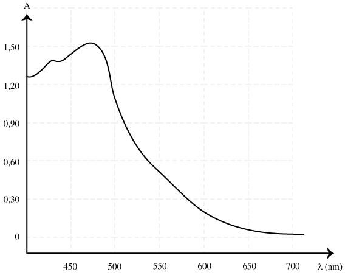

Documents
Bétadine
La Bétadine® dermique 10% est un antiseptique et désinfectant à base d’iode, indiqué pour le nettoyage des plaies ou brûlures superficielles et peu étendues. La Bétadine® peut être utilisée pure, en badigeonnage sur la peau, ou diluée avec de l’eau ou du sérum physiologique pour le lavage et l’irrigation des plaies.Les agents à visée antiseptique ne sont pas stérilisants : ils réduisent temporairement le nombre de micro-organismes.
-
Composition : Povidone iodée 10g pour 100mL, soit 10%, glycérol, éther laurique de macrogol, phosphate distique dihydraté, etc.
-
La Bétadine® est une solution colorée par une seule entité chimique.
Povidone iodée
Le principe actif de la Bétadine® est le diiode $\ce{I2}$. Dans la solution, les molécules de diiode s’associent avec la molécule de povidone
(ou polyvinylpyrrolidone), molécule volumineuse, polymère organique de formule $\ce{(C6H9NO)_{n}}$, pour former la povidone iodée. Au fur et à mesure de son utilisation, la povidone iodée libère les molécules de diiode.
On peut considérer qu’en moyenne, pour la libération d’une mole de diiode, il faut $\pu{2362,8 g}$ de povidone iodée (c’est à dire une
mole).
La povidone iodée possède généralement une absorbance différente de celle du diiode.
Dosage par étalonnage colorimétrique
-
Doser une solution consiste à déterminer la concentration (molaire) d’une entité chimique en solution.
-
Un dosage par étalonnage est un dosage qui s’appuie sur la détermination d’une propriété physique de la solution.
-
Un dosage par étalonnage colorimétrique est un dosage par étalonnage possible lorsque l’entité chimique colore la solution et que la loi de Beer-Lambert peut être appliquée.
Conditions générales de réalisation d’un dosage par étalonnage colorimétrique
-
La loi de Beer-Lambert doit pouvoir être appliquée , la solution doit donc être diluée (la concentration de l’entité chimique colorant la solution doit être inférieure à $\pu{1e-2 mol.L-1}$).
-
La coloration de la solution doit rester stable pendant la mesure de l’absorbance.
-
La longueur d’onde du filtre choisi doit correspondre au rayonnement pour lequel l’absorbance de la solution est maximale. Il est donc nécessaire de connaître le spectre d’absorbance de l’entité.
-
Il est nécessaire de réaliser une courbe d’étalonnage à l’aide d’une échelle de teinte dont les concentrations encadrent la concentration recherchée.
Solutions à disposition
-
Solution de Bétadine® diluée 100 fois.
-
Solution aqueuse de diiode à $\pu{1,0e-3 mol.L-1}$.
Séance
Objectif
L’objectif de cette séance est d’identifier l’entité chimique responsable de la coloration de la Bétadine®, d’établir son spectre d’absorption dans le visible et d’ensuite déterminer sa concentration molaire.
Travail à réaliser
- À partir des documents et de l’examen de la solution de Bétadine®, déterminer quelle est l’entité responsable de la coloration de la solution. Justifier la réponse.
Réponse
La coloration de la Bétadine® est due à la présence de la molécule de diiode $\ce{I2}$.
- Montrer que la concentration de cette espèce chimique dans la Bétadine® est égale à $\pu{4,2e-2 mol.L-1}$ en diiode.
Réponse
-
Dans le premier document, on apprend que la Bétadine® contient $\pu{10 g}$ de povidone iodée pour $\pu{100 mL}$ de solution.
-
Dans le deuxième document, on apprend que $\pu{2362,8 g}$ de povidone iodée libèrent $1\ \text{mole}$ de diiode.
-
La solution de Bétadine® contient donc $\dfrac{\pu{10 g}}{\pu{2362,8 g}} = \pu{4,2e-3}$ fois la masse de povidone iodée évoquée dans le deuxième document. On en déduit donc qu’elle est capable de libérer $\pu{4,2e-3} \times \pu{1 mol} = \pu{4,2e-3 mol}$ de diiode.
-
La quantité de matière juste calculée est celle libérée par $\pu{100 mL}$ de Bétadine®. La concentration molaire en diiode est donc égale à $\pu{4,2e-2 mol.L-1}$.
- Élaborer un protocole expérimental permettant de déterminer la concentration molaire de cette espèce chimique.Justifier en particulier l’utilisation de solutions étalons de concentrations en diiode : $\pu{1,0e-3 mol.L-1}$, $\pu{8,0e-4 mol.L-1}$, $\pu{6,0e-4 mol.L-1}$, $\pu{4,0e-4 mol.L-1}$, $\pu{2,0e-4 mol.L-1}$ et $\pu{1,0e-4 mol.L-1}$.
Réponse
-
La Bétadine fournie est diluée 100 fois, sa concentration est donc voisine de $\pu{4,2e-4 mol.L-1}$.
-
La solution mère de diiode fournie a pour concentration en diiode $\pu{1,0e-3 mol.L-1}$. On peut donc envisager l’élaboration de solutions étalons de concentrations : $\pu{1,0e-3 mol.L-1}$, $\pu{8,0e-4 mol.L-1}$, $\pu{6,0e-4 mol.L-1}$, $\pu{4,0e-4 mol.L-1}$, $\pu{2,0e-4 mol.L-1}$ et $\pu{1,0e-4 mol.L-1}$ puique l’intervalle de concentrations alors réalisé encadre alors la concentration recherchée.
- À l’aide du spectrophotomètre, établir le spectre d’absorption du diiode dans le visible et en déduire la longueur d’onde à utiliser lors du dosage par étalonnage.
Réponse
L’absorbance est maximale aux environs de la longueur d’onde $\lambda = \pu{490 nm}$ ; c’est la longueur d’onde qu’il faut choisir pour réaliser un dosage par étalonnage s’appuyant sur la loi de Beer-Lambert.
- Mettre en œuvre le protocole de dosage par étalonnage.
La concentration en diiode dans la Bétadine® est-elle celle attendue ?
Complément
Dans le langage courant, le terme désinfectant comprend à la fois les désinfectants au sens strict et les antiseptiques. Les deux termes désignent les produits qui ont en commun la capacité d’inhiber ou de détruire les micro-organismes indésirables . Les désinfectants au sens strict sont destinés aux milieux inertes (instruments, surfaces); les antiseptiques sont destinés aux tissus vivants (peau, muqueuse).
Ces produits agissent de façon momentanée, ils ne protègent pas contre une nouvelle contamination ni contre la prolifération naturelle (mitose, réplication). Ils doivent donc être appliqués régulièrement.